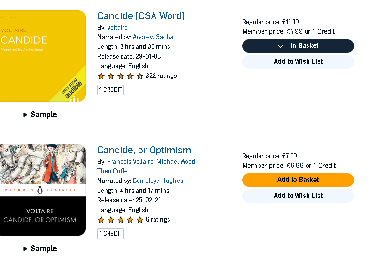

Inheritance Tax in the UK: How the Wealthy Navigate the System
Inheritance Tax (IHT) is one of the most contentious aspects of the UK tax system. Designed to redistribute wealth, it ensures that a portion of a deceased person's estate is paid to the state before being passed on to heirs. However, for the wealthy, the rules of inheritance tax often become a complex web of strategies designed to minimize or even eliminate this financial burden. In this blog post, we'll explore how the rich navigate the inheritance tax system, often finding ways to preserve their wealth across generations.
Understanding Inheritance Tax
Inheritance Tax is currently set at 40% on the value of an estate above the tax-free threshold of £325,000. There's also an additional allowance called the Residence Nil-Rate Band (RNRB), which can increase this threshold when passing on a family home to direct descendants. For estates valued above the threshold, the tax can represent a significant financial hit, prompting many to seek legal means to mitigate the impact.
The Strategies of the Wealthy
-
Gifts and the Seven-Year Rule
-
One of the most common strategies employed by the wealthy to reduce IHT is through gifting. If an individual gives away assets more than seven years before their death, these gifts are exempt from IHT. The rich often utilize this rule to transfer wealth to their heirs during their lifetime, gradually reducing the value of their estate below the taxable threshold.
-
Trusts
-
Trusts are another popular vehicle for reducing inheritance tax liability. By placing assets in a trust, the original owner (the settlor) can retain some control over how the assets are used while removing them from their estate for IHT purposes. Trusts can be complex and require careful planning, but they offer a powerful means of protecting wealth from the taxman.
-
Business Property Relief (BPR)
-
Business owners can take advantage of Business Property Relief, which allows them to pass on qualifying business assets free of IHT or at a reduced rate. This relief applies to shares in a private company, partnerships, or even some agricultural properties, making it a key tool for wealthy individuals who own businesses.
-
Life Insurance Policies
-
Wealthy individuals often use life insurance policies written in trust to cover potential IHT liabilities. The proceeds from these policies are paid directly to the trust, outside of the estate, providing the beneficiaries with the funds needed to settle any tax due without having to sell off assets.
-
Charitable Donations
-
Donations to registered charities are exempt from inheritance tax, and if more than 10% of an estate is left to charity, the IHT rate on the remaining estate is reduced from 40% to 36%. This strategy allows the wealthy to reduce their tax bill while also contributing to causes they care about.
The Debate: Fairness and Loopholes
Critics argue that these strategies create a system where the rich can avoid paying their fair share of tax, perpetuating inequality. They contend that inheritance tax should be reformed to close these loopholes, ensuring that wealth is more evenly distributed. On the other hand, supporters of the current system argue that individuals should have the right to pass on their wealth as they see fit, and that the existing rules simply provide a way to protect family legacies.
The Future of Inheritance Tax
The future of inheritance tax in the UK remains uncertain. As the government grapples with economic challenges and public opinion shifts, changes to IHT could be on the horizon. Proposals have ranged from increasing the tax-free threshold to abolishing inheritance tax altogether, but any reforms are likely to spark significant debate.
Conclusion
Inheritance tax is a complex and often controversial aspect of the UK’s tax system. While it is designed to ensure that wealth is redistributed, the rich have developed sophisticated methods to navigate the system, often preserving their estates for future generations. Whether these strategies are seen as prudent financial planning or as exploiting loopholes, they highlight the ongoing tension between wealth preservation and tax fairness in the UK.
As the debate over inheritance tax continues, one thing is clear: the wealthy will always find ways to adapt, ensuring that their legacies endure while minimizing the taxman’s cut. Whether future reforms will close these avenues or simply create new ones remains to be seen.
UNDERSTAND MOMENT WHEN YOU CAN SEE
GARY > ANALYSES AND CREATES NOW > FINISH ( BOOK AND VIDEOS AT THE TOP OF MASLOW )
Book suggestion

Imported from rifaterdemsahin.com · 2025